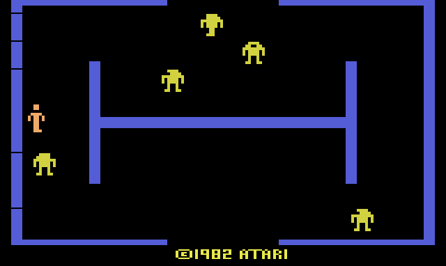
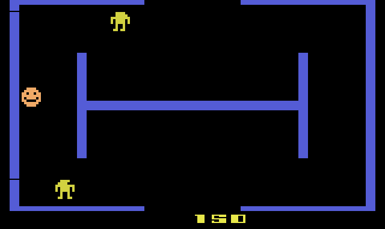
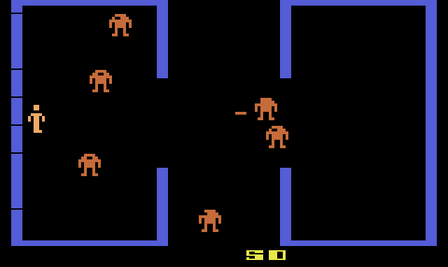

Berzerk
Dan Hitchens' home version of the Stern arcade game: a maze of electrified walls, a room full of robots, and Evil Otto on your heels. The cartridge's own program, translated into JavaScript one instruction at a time with every cycle counted, so each robot and every shot behaves exactly as on the console.

How to play
Shoot the robots and get out through an open side of the room before they get you. Hold the button and you stop and fire the way you last pushed the joystick. Robots fire back in most games, and in some of them Evil Otto comes in after you if you stay too long.
At the controls
- Move←↑↓→ or WASD
- Shoothold Space / Z
- Game ResetEnter
- Game SelectG
- Pause · MuteP · M
Gamepads work too: any face button shoots, Start is Game Reset, Back pauses. After a game, the button alone starts the next one.
Scoring
Every robot you shoot is worth 50 points. Clear a whole room before you leave and you get a bonus of 10 points for each robot in it.
The robots' color changes from level to level, from a table of eight colors in the cartridge.
Twelve games
Game Select runs from game 1 to 12. They differ in three ways, all read from one table in the cartridge: whether there are bonus lives (at 1,000 or 2,000 points), whether Evil Otto comes and whether your shots can turn him back, and whether the robots shoot.
- 1 – 3: bonus life at 1,000 points; no Otto, Otto who bounces back when shot, or an invincible Otto.
- 4 – 6: the same three, with the bonus life at 2,000 points.
- 7 – 9: the same three, with no bonus lives.
- 10 – 12: robots that never shoot, with an invincible Otto, a bouncing Otto, or no Otto at all. Dennis Debro's disassembly calls game 12 the children's version.
The maze
You
Walk out through any open side of the room to reach the next one. Where you leave decides where you come in.
Robots 50
They come at you and, in most games, shoot. A robot that runs into a wall is destroyed.
Evil Otto
In the games that have him, Otto sets off after you about twelve seconds into a room. In some games a shot sends him back for a while; in others nothing stops him.


Built from the ROM
This is not an emulator, and not a remake. A translator read the cartridge's 6502 code, using Dennis Debro's disassembly for labels and comments, and wrote out each instruction as a line of JavaScript with its cycle count. The translated game runs on a model of the 2600's TIA and RIOT chips, and a 6502 core runs the real ROM beside it to prove the two match.
- The game waits on the console's timer before it has ever set it, so it relies on the timer's power-on state.
- Evil Otto's launch timer only counts up when the frame counter rolls over, every 256 frames, and he sets off when it reaches three.
- Otto has no sprite of his own. Once he is in the room, he and the player take turns on the same one, a frame each, so each is drawn thirty times a second.
- The room bonus is the number of robots shifted four bits left and added as a decimal number, which makes it ten points a robot.
- Dennis Debro's notes point out that the ROM has values for robots firing diagonally, which the game never uses.
Developer pages
- Game only: the player on a page of its own
- Verifying against the ROM: the translator, the 6502 oracle and the comparison scripts